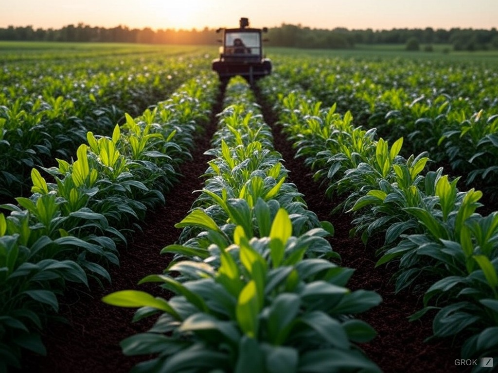

Articoli in Evidenza

Le 5 Tecniche Essenziali per Aumentare la Produzione Agricola
Scopri come utilizzare le tecnologie moderne per ottimizzare i tuoi raccolti e migliorare la qualità delle coltivazioni.
Leggi di più

Come Analizzare e Migliorare la Fertilità
Una guida completa per comprendere il tuo terreno e renderlo più fertile con tecniche naturali ed efficienti.
Leggi di più
Sensori IoT in Agricoltura: Il Futuro della Coltivazione
Impara come i sensori intelligenti possono monitorare il tuo campo e ridurre sprechi, migliorando i profitti.
Leggi di più